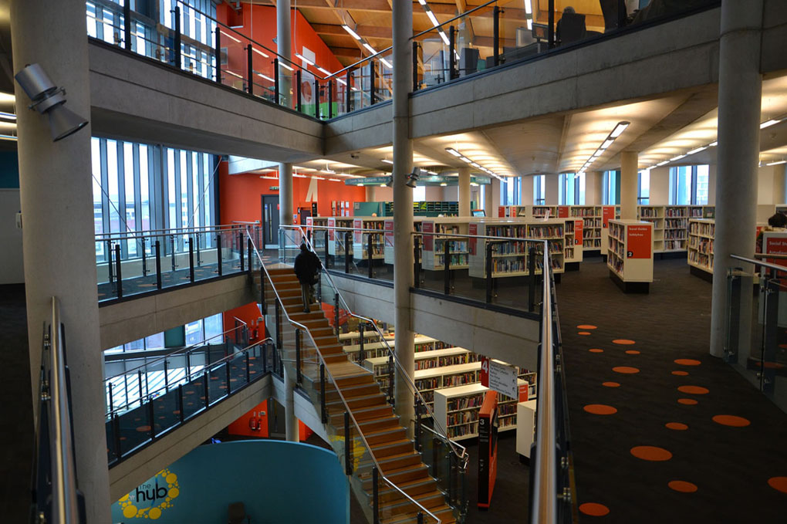

Library
Welcome to The Community Science Museum Library
We at The Community Science Museum appreciate books. At our Library you can find literature, writings and research from the past 3000 years. Our oldest and most fragile pieces are displayed in containers for our visiters to take a look at,
but we also have pieces that both children and adults can take with them and read in the hall.
You can find the library at the third floor of the museum. May you take a step back and enjoy the experience!
